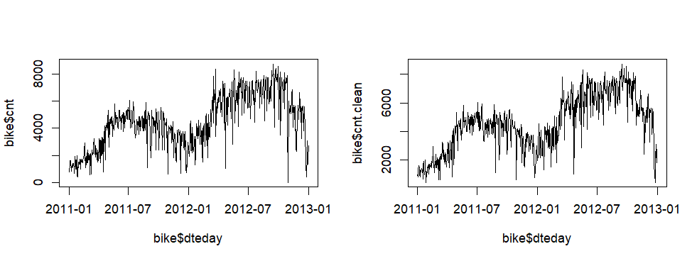
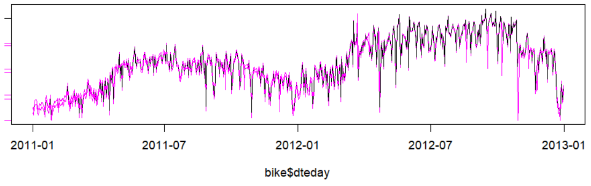
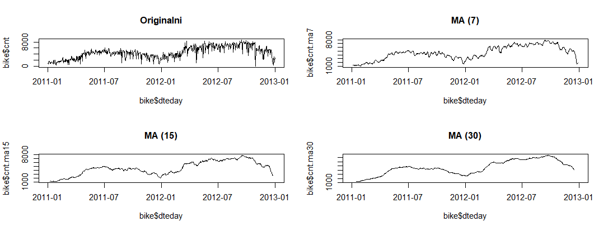
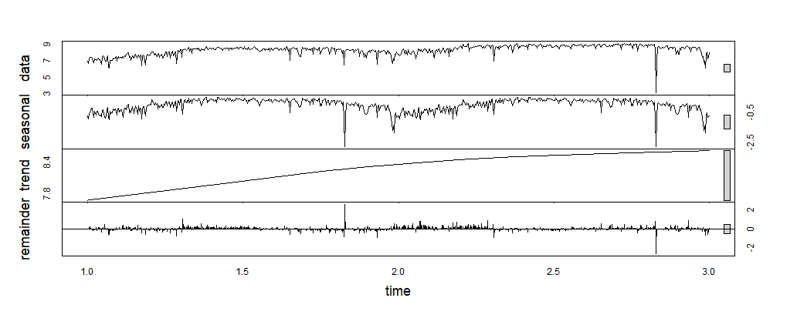
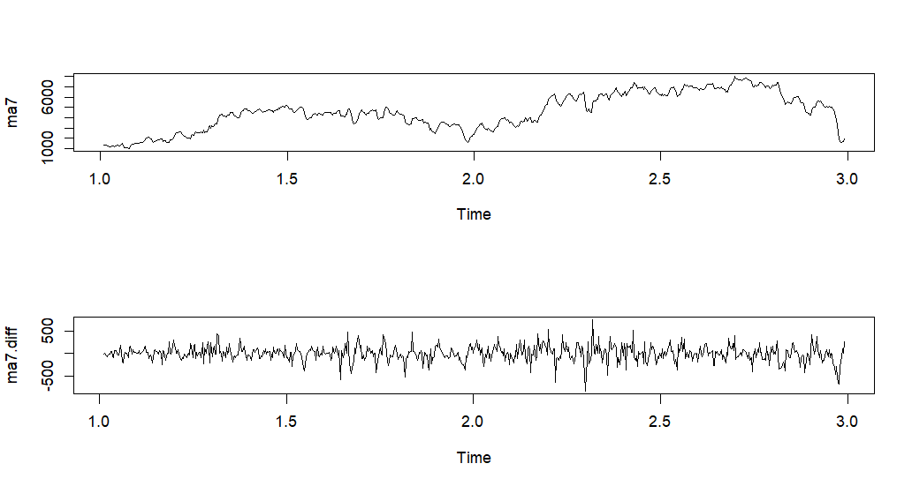
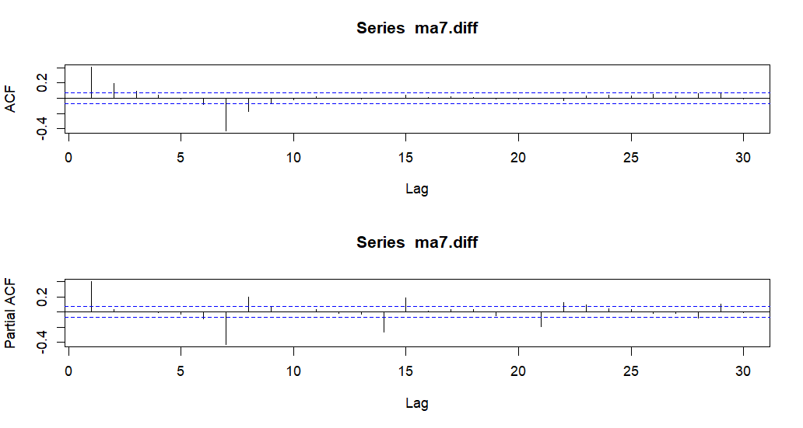
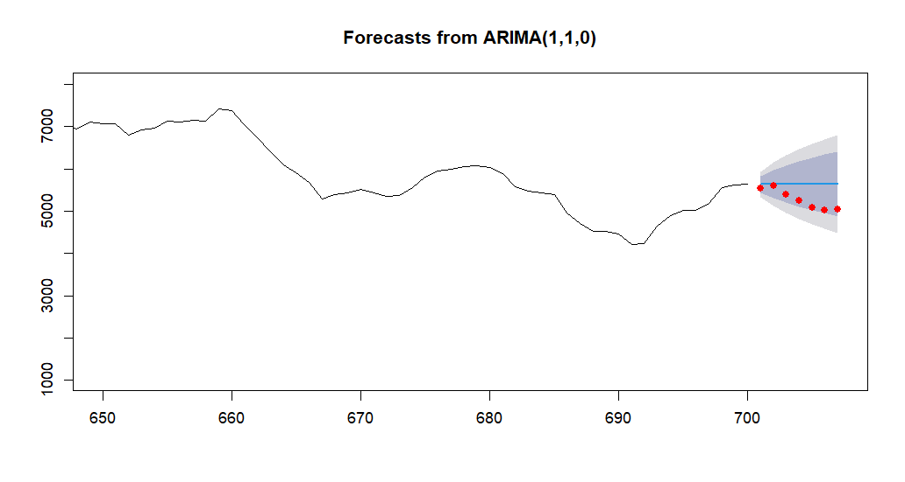

day.csv u data frame naziva bike uz postavku da se ne izvrši automatsko pretvaranje znakovnih nizova u factor.read.csv("day.csv", stringsAsFactors = FALSE)
dteday u datum formata godina-mjesec-dan.as.Date(vector, format = "%Y-%m-%d")
Pomoću linijskog grafikona prikažite broj posudbi (cnt) prema danima (dteday).
Na koji je datum bilo najviše, a na koji najmanje posudbi?
Pretvorite cnt u vremenski niz (frequency = 365) te ga očistite od nedostajućih vrijednosti i outliera (ako ih ima; tsclean()). Podatke spremite u varijablu cnt.clean.
Usporedite grafički originalni niz i očišćeni niz (cnt.clean).
Primjer:  
Napravite 3 nova niza tako da cnt.clean zagladite pomoću pomičnih prosjeka reda 7, 15 i 30.
Prikažite grafički cnt.clean i nizove pomičnih prosjeka.
Primjer: 
Izvršite aditivnu dekompoziciju vremenskog niza. Za koliko se promijenio broj posudbi zbog sezonskog utjecaja na dan 6.1.2011.?
Izvršite multiplikativnu dekompoziciju vremenskog niza kosristeći originalne podatke. Za koliko se promijenio broj posudbi zbog sezonskog utjecaja na dan 1.1.2011.?
Prikažite grafički rezultat dekompozicije.
Primjer: 
Koristit ćemo zaglađene podatke (reda 7). Uklonite nedostajuće vrijednosti.
Izvršite provjeru stacionarnosti vremenskog niza. Je li niz stacionaran?
Izračunajte prvu diferenciju niza. Ponovite test stacionarnosti. Je li niz stacionaran?
Provjerite pomoću funkcije (ndiffs()) broj diferenciranja potreban da bi niz postao
stacionaran. Odgovara li rezultat onome iz zadatka 14.?
Grafički usporedite nizove prije i nakon diferenciranja.
Primjer: 
Grafički prikažite autokorelacijsku funkciju i funkciju parcijalne autokorelacije (lag.max = 30). Na kojim su pomacima značajni koeficijenti?
Primjer: 
Napravite ARIMA model koristeći funkciju za automatsko određivanje parametara (auto.arima()). Koristite
prvih 700 vrijednosti zaglađenih podataka bez diferenciranja.
Koje su vrijednosti parametara odabrane?
Koliko iznosi RMSE modela?
Koristite model za predviđanje 7 dana unaprijed. Prikažite rezultate grafički zajedno sa stvarnim vrijednostima.
Primjer: 